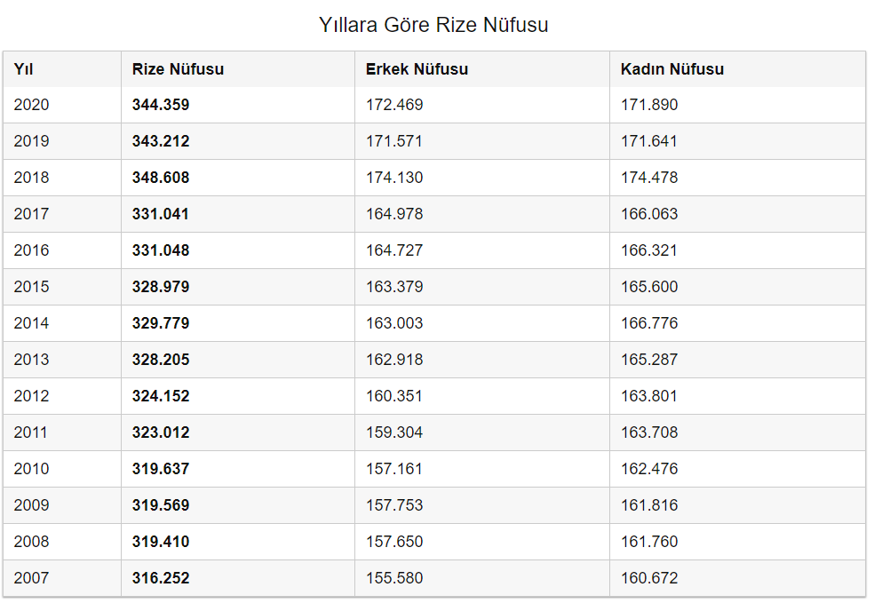

Rize
Rize (Antik Yunanca: Ριζαίον (Rizeon), Yunanca: Ριζούντα (Rizunda) Lazca: რიზინი "Rizini"), Karadeniz Bölgesi'nin Doğu Karadeniz bölümünde yer alan bir şehirdir. Tarihi Pontus bölgesinin doğusunda kalan Rize, Osmanlı döneminde Lazistan Sancağı'nda yer almıştır. Günümüzde Türkiye'ye bağlıdır.
Doğuda Çayeli ve Güneysu ile, güneyde İkizdere, batıda Derepazarı ve Kalkandere, kuzeyde Karadeniz ile çevrilidir. Şehrin nüfusu 2009 yılına göre 96.503'tir. 1927'de 14.000 olan nüfusu 1990'da 52.743'e, 2000'de 78.144'e, 2007'de 94.800'e çıkmıştır. 2020 verilerine göre ise nüfus 348.608'dir.
